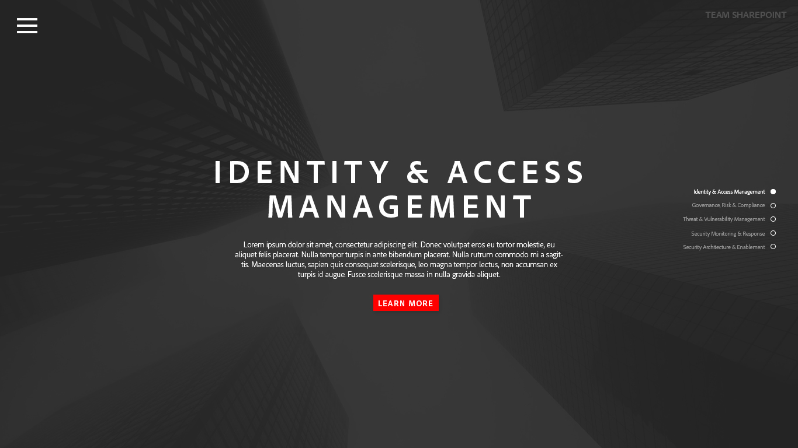

Introducing QUAK, the real-time question and answer application that creates a seamless hierarchy of questions and preserve anonymity during presentations.
Asking questions during lecture, or any presentation, can be an arduous process for many reasons: we have to hold onto our questions and keep them in our heads until the presenter is ready to answer them, the presenter spends too much time answering "dumb" questions (even though they may say there's no such thing) when there are better questions to be asked, or sometimes, we just don't feel like speaking up in front of a large crowd.
Technologies used:The home page of the redesigned Sharepoint site.
 Technologies used:One of the mockups (home view).